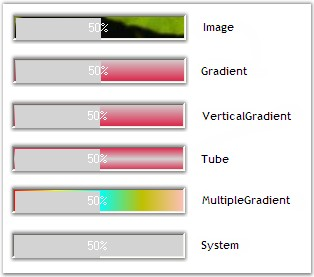
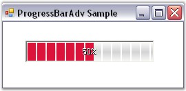
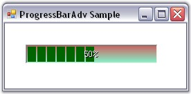
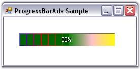
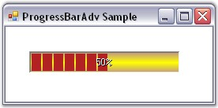

The ProgressBarAdv control consists
of various properties to customize the background. These properties and their
description are given below.
The style of the background can be set using the properties given below.
|
ProgressBarAdv Property |
Description |
|
BackgroundStyle |
Determines the style of the background. It includes the options given below.
· Image, · Gradient, · VerticalGradient, · Tube, · MultipleGradient, · System and · None. |
|
BackgroundFallbackStyle |
Determines the style of the background when BackgroundStyle is set to 'System', provided the system does not support themes. |
|
[C#]
this.progressBarAdv1.BackgroundStyle = Syncfusion.Windows.Forms.Tools.ProgressBarBackgroundStyles.Gradient; this.progressBarAdv1.BackgroundFallbackStyle = Syncfusion.Windows.Forms.Tools.ProgressBarBackgroundStyles.MultipleGradient; |
|
[VB.NET]
Me.progressBarAdv1.BackgroundStyle = Syncfusion.Windows.Forms.Tools.ProgressBarBackgroundStyles.Gradient Me.progressBarAdv1.BackgroundFallbackStyle = Syncfusion.Windows.Forms.Tools.ProgressBarBackgroundStyles.MultipleGradient |

Figure 958: Background Styles
 Note: To display the above styles in
different colors the BackGradientStartColor
and BackGradientEndColor
properties can be used.
Note: To display the above styles in
different colors the BackGradientStartColor
and BackGradientEndColor
properties can be used.
The background of the ProgressBarAdv can be displayed with a segmented appearance using the property given below.
|
ProgressBarAdv Property |
Description |
|
BackSegments |
Determines if the background is segmented.
The BackgroundStyle property must be set to 'Tube'. |
|
[C#]
this.progressBarAdv1.BackSegments = true; |
|
[VB.NET]
Me.progressBarAdv1.BackSegments = True |

Figure 959: ProgressBarAdv with BackSegments property set to True
This section illustrates the color settings that can be applied to the background of the ProgressBarAdv.
Gradient Color
The color of the background gradient can be changed using the properties given below.
|
ProgressBarAdv Property |
Description |
|
BackGradientStartColor |
Specifies the start color of the background gradient.
The BackgroundStyle property should be set to 'Gradient' or 'VerticalGradient'. |
|
BackGradientEndColor |
Specifies the end color of the background gradient.
The BackgroundStyle property should be set to 'Gradient' or 'VerticalGradient'. |
|
[C#]
this.progressBarAdv1.BackGradientEndColor = System.Drawing.Color.Aquamarine; this.progressBarAdv1.BackGradientStartColor = System.Drawing.Color.IndianRed; |
|
[VB.NET]
Me.progressBarAdv1.BackGradientEndColor = System.Drawing.Color.Aquamarine Me.progressBarAdv1.BackGradientStartColor = System.Drawing.Color.IndianRed |

Figure 960: Background Gradient Color Set
The background gradient can be displayed with multiple colors using the property given below.
|
ProgressBarAdv Property |
Description |
|
BackMultipleColors |
Specifies the array of colors used to draw the multiple gradient of the background.
The BackgroundStyle property should be set to 'MultipleGradient'. |
|
[C#]
this.progressBarAdv1.BackMultipleColors = new System.Drawing.Color[] {System.Drawing.Color.Blue, System.Drawing.Color.Red, System.Drawing.Color.Green, System.Drawing.Color.Pink, System.Drawing.Color.Yellow}; |
|
[VB.NET]
Me.progressBarAdv1.BackMultipleColors = New System.Drawing.Color[] {System.Drawing.Color.Blue, System.Drawing.Color.Red, System.Drawing.Color.Green, System.Drawing.Color.Pink, System.Drawing.Color.Yellow} |

Figure 961: Background Gradient displayed with Multiple Colors
Tube Color
Colors can be set for the background tube of the ProgressBarAdv.
|
ProgressBarAdv Property |
Description |
|
BackTubeStartColor |
Specifies the start color of the background tube.
The BackgroundStyle property should be set to 'Tube'. |
|
BackTubeEndColor |
Specifies the end color of the background tube.
The BackgroundStyle property should be set to 'Tube'. |
|
[C#]
this.progressBarAdv1.BackTubeEndColor = System.Drawing.Color.RosyBrown; this.progressBarAdv1.BackTubeStartColor = System.Drawing.Color.Yellow; |
|
[VB.NET]
Me.progressBarAdv1.BackTubeEndColor = System.Drawing.Color.RosyBrown Me.progressBarAdv1.BackTubeStartColor = System.Drawing.Color.Yellow |

Figure 962: Background Tube Color Set
See Also